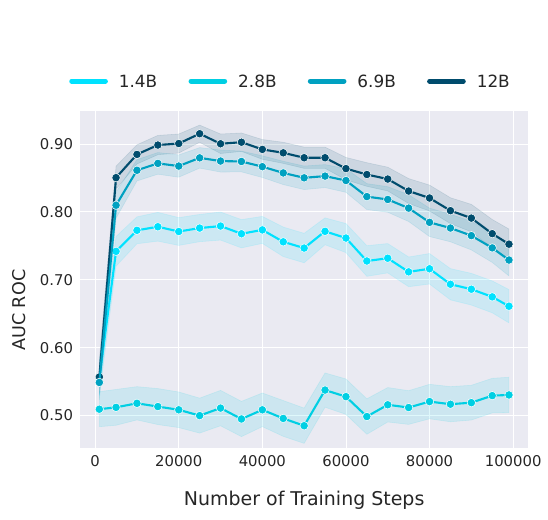
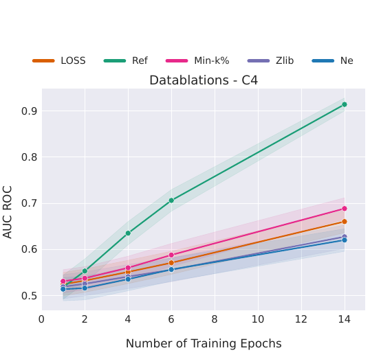
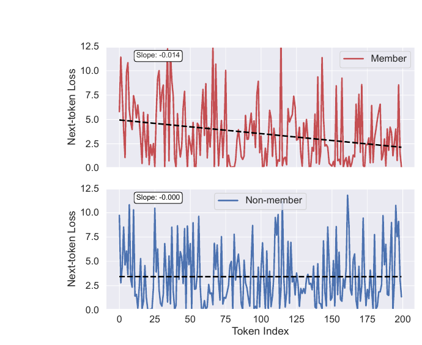
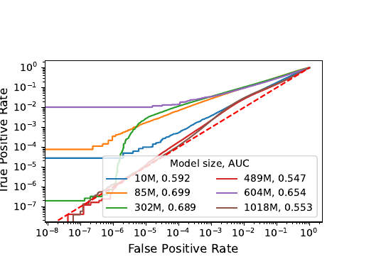
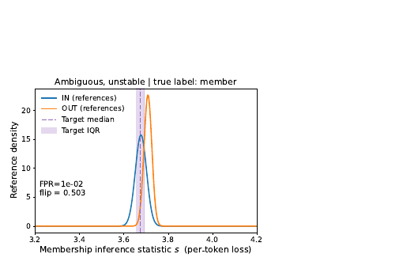
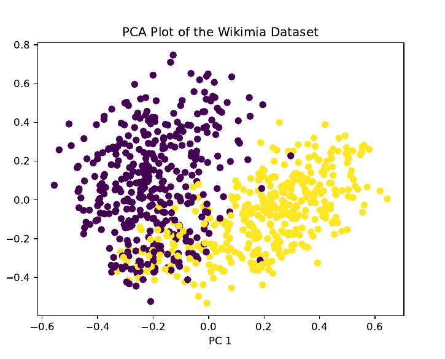

Membership Inference
in LLMs
Why the signal is small, how calibration recovers it, and where the benchmarks broke
Albert No · Yonsei University
2026
Contents
Why LLM MIA Is
Structurally Hard
A signal-to-noise ceiling, derived from a training model
Recall — The Membership Game
Recall (the game and its optimum).
Flip $b\sim\text{Bern}(1/2)$. If $b=1$ show a training record; if $b=0$ show a fresh draw from the same law. Adversary sees a view $V$ and guesses $\hat b$.
$P_1,P_0$ = law of the view under member / non-member. Every optimal attack is a likelihood-ratio test.
Recall — The Modern Recipe
Statistic
Loss, logit $\varphi(p)=\log\frac{p}{1-p}$, trajectory.
Conditioning
Pooled, per-class, per-example.
Null estimator
Shadow models: retrain many times without $x$.
Per-example calibration is what made the recipe strong. Shadow retraining is what makes it impossible here.
What Breaks When the Model Is an LLM
One pass
Trillions of tokens, most seen once. No multi-epoch overfit to lean on.
Shadows infeasible
Cannot pre-train a 7B model 128 times. The null must come from elsewhere.
Unknown training pool
Undisclosed web mixture. No clean in/out partition to sample.
Variable-length text
$T(x)$ summarises $|x|$ token losses. Length is itself a confound.
Three Threat Models
Pre-training
“Was $x$ in the crawl?” Huge $N$, one epoch.
Fine-tuning
“Was $x$ in the instruction set?” Small $N$, many epochs.
Context / RAG
“Is $x$ in the prompt?” Not a training-data question.
The first two differ only in $(N, E)$. §01 shows that pair decides everything.
The Perplexity Baseline
LLM analogue of the loss threshold — a per-token NLL summary:
Recall (why thresholds are weak).
A global threshold on a loss is the degenerate LRT: it assumes one null shared by every example. Correct only if all examples have the same intrinsic difficulty.
Two Confounds Inside Perplexity
Low PPL $\neq$ member
"Hello, how are you?" is cheap for any LM.
Fluency, not memorization.
High PPL $\neq$ non-member
Rare jargon stays expensive after training.
Difficulty, not absence.
Perplexity mixes a membership term with an intrinsic-difficulty term.
Length adds a third. §02 is entirely about removing the second.
A Toy Training Model
To predict how large the membership signal can be, fix a caricature of training.
- (A1) $N$ records, $E$ epochs, SGD with constant step $\eta$, one step per record.
- (A2) Frozen gradients. $\nabla\ell(x_i;\theta) = g_i$ throughout training.
- (A3) Statistic $T(x) = \ell(x;\theta)$, the loss of $x$ under the final model.
- (A4) First order in $\eta$: $\ell(x;\theta_0 + u) \approx \ell(x;\theta_0) + \langle g_x, u\rangle$.
M1 is the linearized (NTK-style) caricature. It gives scalings, never constants.
Proposition 1 — The Membership Shift
Proposition 1 (membership-induced mean shift, Model M1).
Let $\theta^{\text{in}}$ and $\theta^{\text{out}}$ be the parameters obtained from the same run with and without $x$. Then
Training on $x$ lowers its loss by exactly $\Delta(x) = \eta E\|g_x\|^2 \ge 0$.
Key idea: membership acts on the statistic through one scalar — the squared gradient norm of $x$.
Proof of Proposition 1
By (A1)–(A2) the update is a sum over records and epochs; subtracting, every shared term cancels:
Apply (A4) with $u = \theta^{\text{in}}-\theta^{\text{out}}$:
Proposition 2 — Shift to Advantage
Proposition 2 (Gaussian two-sample ceiling).
With $T\mid\text{in} \sim \mathcal{N}(\mu-\Delta,\sigma^2)$, $T\mid\text{out} \sim \mathcal{N}(\mu,\sigma^2)$ and $\rho = \Delta/\sigma$:
Everything reduces to one number: the signal-to-noise ratio $\rho = \Delta/\sigma$.
Proof of Proposition 2
Score is $-T$, so a member is detected when its loss is the smaller of the two.
Line 1: difference of independent normals. Line 2: recall $\sup_\mathcal{A}\mathrm{Adv}=\mathrm{TV}$, and equal-variance Gaussians overlap on a half-line.
Expanding $\Phi(u) = \tfrac12 + \tfrac{u}{\sqrt{2\pi}}+O(u^3)$ at $u=\rho/\sqrt2$ gives the last claim. $\blacksquare$
Proposition 3 — Two Nulls, Two Ceilings
What plays the role of $\sigma$ depends on which null the attack uses.
Proposition 3 (SNR of the pooled and the calibrated attack, Model M1).
with $\sigma_{\text{diff}}^2 = \mathrm{Var}_{z\sim P}[\ell(z;\theta_0)]$ and $v_x = \mathrm{Var}_{z\sim P}\langle g_x, g_z\rangle$.
$\rho_{\text{pool}}$ carries a factor $\eta$. $\rho_{\text{cal}}$ does not — but it carries $1/\sqrt N$.
Proof of Proposition 3 — Pooled Null
The pooled attack thresholds $T$ against one global constant. Its null spread is the spread of $T$ across examples:
The second term is $O(\eta)$; the first is $\eta$-free. Hence $\sigma_{\text{pool}} \to \sigma_{\text{diff}}$ as $\eta \to 0$.
Numerator $\Delta = \eta E\|g_x\|^2$ vanishes with $\eta$; the denominator does not.
So $\rho_{\text{pool}} = \Theta(\eta E)$: the difficulty spread dominates at any realistic step size.
Proof of Proposition 3 — Calibrated Null
Compare $T(x)$ to its own null: its law over re-draws of the other $N$ records, a sum of $N$ i.i.d. terms with variance $v_x = \mathrm{Var}_z\langle g_x,g_z\rangle$.
Both $\eta$ and $E$ cancel: the step size drops out of the calibrated ratio.
Propositions 1–3 — Recap
(1) Gaussian two-sample, Proposition 2. (2) definition of the SNR. (3) Proposition 1. (4) substitute the two nulls, Proposition 3.
The whole of §02 is an attempt to realise the second branch without shadow models.
The Picture: Shift Against Spread
Same curves, same $\Delta$-versus-$\sigma$ question. Only the ratio changed.
Reading Proposition 3
| Lever | Pooled SNR | Calibrated SNR |
|---|---|---|
| Step size $\eta$ smaller | shrinks linearly | no effect |
| Epochs $E$ larger | grows linearly | no effect |
| Corpus $N$ larger | no effect | shrinks as $N^{-1/2}$ |
| Gradient norm $\|g_x\|$ larger | grows | grows |
Pre-training sets $E=1$, $\eta \sim 10^{-4}$, $N \sim 10^{9}$ — every lever is at its worst.
Corollary 1 — Capacity Over Data
Add (A5): gradients of distinct records are near-orthogonal in an effective dimension $d_{\text{eff}}$, so $v_x \approx \|g_x\|^4/d_{\text{eff}}$. Then Proposition 3 gives
Membership leakage is governed by capacity per record, not by loss.
Qualitative predictions: AUC rises with model size at fixed data; falls with corpus size at fixed model.
A scaling, not a number — $d_{\text{eff}}$ is not the parameter count. Do not read absolute AUC off this.
What Model M1 Does Not Say
- Not a theorem about real LLMs — (A2) freezes gradients; real training does not
- $E$ cancels in $\rho_{\text{cal}}$ only because of that freezing
- So M1 under-predicts the epoch effect, as the next slides show
- No claim about constants — only about motion in $(\eta, E, N, d_{\text{eff}})$
Use it as a compass: which direction does each design choice push the ceiling?
Signal Does Not Accumulate With Steps

Reading That Curve
- AUC rises early in training, then gradually declines as steps accumulate
- Consistent with M1: the shift $\Delta$ is fixed at $\eta\|g_x\|^2$ while later updates add null noise
- More compute on the same corpus does not raise the ceiling
Under one pass, a record's membership evidence is written once and then diluted.
Signal Does Accumulate With Epochs

Two Knobs Every Attack Turns
The statistic $T(x)$
Sequence NLL, per-token NLL, loss-versus-position slope, loss under many contexts.
The null $q$
Another LM, perturbations of $x$, self-generations, the population marginal.
Proposition 3 says the second knob is the one that removes the $\eta$ penalty.
§02 makes “choose a null” into a single definition with five estimators.
The Calibration
Principle
One definition, five estimators of the null
Definition 1 — Calibrated Score
Definition 1 (calibrated membership score).
Fix a null density estimator $q$: a map from text to a log-probability that does not depend on whether $x$ was trained on. The calibrated score is
Every LLM attack in this lecture is Definition 1 with a different $q$.
The zoo is not six ideas. It is one idea and six estimators.
Recall — Why Pooling Loses
Recall (the pooling argument).
A single global threshold tests a mixture: examples with wildly different intrinsic difficulty share one null. The pooled ROC is the mixture of the per-example ROCs.
Recall (concavity).
Each per-example ROC is concave; by Jensen the mixture lies below the average of the per-example curves. Per-example conditioning dominates pooling, uniformly in $\alpha$.
Both are established. §02 supplies the quantitative version: how much does calibration buy, and when does it backfire?
Proposition 4 — Difficulty Cancellation
Proposition 4 (what a null estimator buys, and what it costs).
Suppose $\;-\log p_\theta(x) = a(x) - \Delta\,\mathbf{1}[x \in D] + \varepsilon\;$ and $\;-\log q(x) = a(x) + \delta(x)$, with $a \perp \varepsilon \perp \delta$, $\mathbb{E}\delta = 0$, and $q$ independent of membership. Then
A reference helps exactly when its own error is smaller than the difficulty spread it removes.
Proof of Proposition 4
Write $b = \mathbf{1}[x\in D]$. The raw score is $\log p_\theta(x) = -a(x)+\Delta b-\varepsilon$:
The calibrated score cancels $a(x)$ term by term:
Same mean gap $\Delta$; variance now $\sigma_\delta^2+\sigma_\varepsilon^2$. Dividing gives the two ratios, and comparing denominators gives the equivalence. $\blacksquare$
Two Failure Modes of a Null
Noisy null — $\sigma_\delta^2$ large
The reference tracks difficulty badly.
Calibration adds variance. Worse than raw perplexity.
Contaminated null
$q$ secretly depends on membership.
$\Delta$ shrinks toward $0$ — the signal is subtracted away.
Design target for every $q$ below: track $a(x)$ closely, stay blind to $D$.
One Score, Three Nulls
Only the red sliver is membership. Every $q$ is an attempt to measure the blue block.
What Makes a Good $q$
- Accurate — small $\sigma_\delta$ relative to the difficulty spread $\sigma_a$
- Blind — computable without knowing $D$, and not itself trained on $x$
- Cheap — no re-pre-training; a handful of forward passes
Shadow models score perfectly on the first two and fail catastrophically on the third.
The five strategies below trade accuracy for feasibility in different ways.
Reference Model
- $\theta_{\text{ref}}$: a smaller or differently-trained LM — one forward pass
- Compression variant: $q$ = negative zlib code length of $x$
- $\delta(x)$ = the reference's own difficulty error on $x$
Valid exactly when the reference error is smaller than the difficulty spread it removes — Proposition 4.
Where the Reference Model Breaks
Proposition 4 says the reference helps only if $\sigma_\delta \lt \sigma_a$. Two ways that fails:
Distribution mismatch
$\delta(x)$ blows up on any domain the reference never saw.
Overlapping corpora
Both trained on the web: $q$ may contain $x$ too.
Neighbourhood: Build the Null From $x$
Mask spans of $x$ and refill with a masked LM, giving $\tilde x^{(1)},\dots,\tilde x^{(K)}$.
Key idea: the null is evaluated under the target model, so its difficulty scale is automatically right — no second model to mis-specify.
Lemma 1 — When Is This Null Valid?
Lemma 1 (exchangeable perturbations give an exact test).
Suppose that conditional on $x \notin D$, the $K+1$ values
are exchangeable. Then the rank $R$ of $\log p_\theta(x)$ among them is uniform on $\{1,\dots,K+1\}$, so rejecting when $R=1$ has exact level $\tfrac{1}{K+1}$.
Distribution-free, model-free, finite-sample exact. No Gaussian assumption anywhere.
Proof of Lemma 1
Let $V_0 = \log p_\theta(x)$ and $V_k = \log p_\theta(\tilde x^{(k)})$. Exchangeability means the joint law of $(V_0,\dots,V_K)$ is invariant under every permutation $\pi$ of the indices.
Assume the $V_k$ are almost surely distinct. For each $j$,
Permutation invariance makes this the same for every index in the role of $V_0$, and the $K+1$ events partition the space. So each has probability $\tfrac{1}{K+1}$, giving the claimed level. $\blacksquare$
The Neighbourhood Picture
Dots are perturbations $\tilde x^{(k)}$; the centre is $x$. Membership shows up as a local maximum, not a large value.
Where Exchangeability Fails
- Fluency bias. Mask-filled text is systematically easier (or harder) than human text
- Structured text. Span replacement breaks code and mathematics; $x$ then ranks first for syntactic reasons
- Near-duplicates. A paraphrase of $x$ inside $D$ contaminates the null
Broken exchangeability turns the exact level $\tfrac{1}{K+1}$ into an unknown one.
SPV-MIA: The Model Writes Its Own Null
Prompt the target LLM to generate a corpus in its own style; fine-tune the reference model on that corpus.
Key idea: the self-prompted corpus matches the target's distribution without containing its records.
Fixes the distribution-mismatch half of the reference-model failure.
SPV-MIA — Assumption and Evidence
Validity needs self-generations that match the fine-tuning distribution but rarely reproduce individual records.
- Reported lift of MIA AUC “from 0.7 to a significantly high level of 0.9”
- Best average AUC 0.924 over four LLMs and three datasets
- Signal framed as probabilistic variation: memorization, not overfitting
Note the regime — fine-tuned targets. Corollary 3 explains why that matters.
Context-Aware: The Null Is a Trajectory
Earlier estimators compress $x$ to one number. CAMIA keeps the whole per-token loss curve
Key idea: memorization is context-dependent. A member needs less context before its loss drops; a non-member keeps guessing.
The null is not another model — it is the shape the curve would have without memorization.
Two Context Statistics
Cut-off loss: average only the first $T'$ tokens, where context is scarce. Slope: how fast the loss falls as context accumulates.
The second is an ordinary least-squares slope of $L_t$ on $t$. Members fall faster, so their slope is more negative.
Members Descend Faster

The Rest of the Family
| Statistic | What it measures |
|---|---|
| Token-diversity calibration | Divide the loss by $d_x = |\mathrm{Dedup}(x)|/|x|$ — repetitive text is easy for anyone |
| Low-loss counting | Count tokens below a threshold: fixed, sequence-mean, or running-mean |
| Loss fluctuation | Approximate entropy and Lempel–Ziv complexity of the loss curve |
| Repetition amplification | Feed $x$ twice; non-members gain more from the repeat |
Members produce smoother, more regular loss curves; non-members fluctuate.
What Context Calibration Buys
- Pythia-160M, GitHub domain: TPR at 1% FPR rises 23.13% → 63.43% once the loss is context-calibrated
- Early tokens carry the clearest member / non-member gap
- Evaluated on MIMIR — a randomly-split benchmark, not a date-split one
The authors avoid WikiMIA deliberately: a model-free baseline reaches about 98.7% AUC there.
§03 turns that observation into a proposition.
Estimator 5 — Not All Tokens Are Equal
Per-token surprisal $U_t = -\log p_\theta(x_t\mid x_{\lt t})$. Filler carries no membership evidence.
filler predictable for anyone specific predictable only if memorized
Averaging all $T$ tokens dilutes a signal that lives in a handful of positions.
Two responses to the same observation: select the informative positions (Min-K%), or reweight every position by its own null (InfoRMIA).
Recall — Min-K% Probability
Recall (the tail statistic).
Take the $k = \lceil \alpha T\rceil$ tokens with the largest surprisal and average them:
Motivated by tail sufficiency: a memorized document should have no highly surprising tokens.
Definition, motivation and the Min-K%++ normalisation are already established. Here we ask one new question: is $S_\alpha$ calibrated?
Proposition 5 — The Selection Effect
Proposition 5 (tail selection is itself an uncalibrated statistic).
Let the surprisals of $x$ be i.i.d. from a document-specific law $F_x$ with finite mean. Then, almost surely as $T\to\infty$,
The limit depends on $x$ only through $F_x$: a property of the document, not of $D$.
Tail selection swaps the mean of $F_x$ for the tail mean of $F_x$. One confound for another.
Proof of Proposition 5
Let $\hat F_T$ be the empirical distribution of $U_1,\dots,U_T$. The top-$k$ mean with $k=\lceil\alpha T\rceil$ is exactly an integral of the empirical quantile function:
By Glivenko–Cantelli $\hat F_T \to F_x$ uniformly a.s.; with a finite mean the quantile integral converges too, giving $\mathrm{CTE}_\alpha(F_x)$. $\blacksquare$
Consequence: a global threshold on $S_\alpha$ is still a pooled test, now over tail shapes. Length enters through $k=\lceil\alpha T\rceil$.
Two Documents, Same Tail Rule
Same rule, incomparable outputs. Min-K%++ fixes this by normalising each token against its own vocabulary-wide null.
InfoRMIA: A Composite Hypothesis Test
Instead of one null example, test $x$ against the whole population law $p(z)$:
$H_0$
$\theta$ was trained with some $z \sim p(z)$.
$H_1$
$\theta$ was trained with the given $x$.
A Bayes factor averaged in the log domain — continuous, with no exceedance threshold $\gamma$.
Theorem 1 — InfoRMIA Decomposition
Theorem 1 (Tao & Shokri 2025).
The first term is how much $\theta$ tells you about $x$ — a pointwise information gain, the formal content of “$\theta$ memorized $x$”.
The second term does not mention $x$ at all.
Proof of Theorem 1
Apply Bayes to both posteriors, with the same prior $p(\theta)$:
Take logs and average over $z\sim p$. The first factor is free of $z$:
The remaining sum is by definition $D_{\mathrm{KL}}(p(z)\,\|\,p(z\mid\theta))$. $\blacksquare$
Corollary 2 — It Is Definition 1 Again
The KL term is a function of $\theta$ alone. For a fixed target model it is a constant.
InfoRMIA ranks candidates by Definition 1 with $\;q = p\;$, the population marginal.
The most recent attack in the series is the calibration principle with the most honest null available.
The same numerator drives the pairwise ratio $\;\big(p(x\mid\theta)/p(x)\big)\big/\big(p(z\mid\theta)/p(z)\big)$ used by RMIA.
Why the Log Average Beats the Count
| Aspect | Pairwise counting | InfoRMIA |
|---|---|---|
| Aggregation | Fraction of $z$ with ratio above $\gamma$ | Mean of the log ratio |
| Output | Discrete, granularity $1/|Z|$ | Continuous |
| Extra knob | Threshold $\gamma$ to tune | None |
| Population size | Large $|Z|$ needed | Far less sensitive to $|Z|$ |
Discretising a score at granularity $1/|Z|$ destroys resolution exactly where it matters — the extreme tail used for TPR at low FPR.
Token-Level InfoRMIA
Apply Theorem 1 one token at a time: $x_t$ is the label of prefix $x_{\lt t}$.
- Population set $Z_t$ = every other vocabulary token at position $t$
- The null is then free: the model's own next-token distribution
- Sequence score by averaging, or by min-$k$ over positions
Token weighting done right — the weight is not hand-designed, it falls out of the per-token ratio.
InfoRMIA — Reported Evidence
| Setting | Pairwise RMIA | InfoRMIA |
|---|---|---|
| AG News, GPT-2, AUC | 0.8766 | 0.8784 |
| AG News, GPT-2, TPR at 0.1% FPR | 1.60% | 12.0% |
| CIFAR-10, TPR at 0.1% FPR | 0.00% | 5.82% |
AUC barely moves; the low-FPR regime moves by an order of magnitude. Exactly the metric that matters.
The Calibration Zoo
| Attack | Statistic | Null estimator |
|---|---|---|
| Perplexity | Sequence NLL | Global constant |
| Reference model | Sequence NLL | A second LM, or zlib length |
| Neighbourhood | Sequence NLL | Mean over perturbations of $x$ |
| SPV-MIA | Sequence NLL | LM trained on self-generations |
| CAMIA | Per-token loss curve | Expected shape of that curve |
| Min-K% / InfoRMIA | Per-token surprisal | Tail rule / population marginal |
The Zoo, Read as Assumptions
| Attack | What must hold for the null to be valid |
|---|---|
| Perplexity | All documents share one difficulty — false |
| Reference model | Reference error smaller than difficulty spread |
| Neighbourhood | Perturbations exchangeable with $x$ under $H_0$ |
| SPV-MIA | Self-generations match the distribution, not the records |
| CAMIA | Context accrual differs by membership, not by genre |
| InfoRMIA | Population marginal $p(x)$ can be estimated |
Every row is a place a benchmark can go wrong. §03 shows one where the benchmark itself did.
The Empirical Wall
Instability, and a benchmark validity failure
The Headline Question
§02 built better and better nulls. §01 predicted the ceiling would barely move.
- Does pre-training MIA work at all?
- If aggregate AUC rises, does any individual claim become reliable?
- When a benchmark says an attack works, what has actually been measured?
Three results answer these three questions. The third is the most important.
Do MIAs Work on LLMs?
Design
5 attacks: loss, reference, Min-K%, zlib, neighbourhood.
Pythia and Pythia-dedup at 160M to 12B; also GPT-Neo, OLMo.
Benchmark
MIMIR: 7 Pile domains, members and non-members randomly split from one pool.
Reported: no single attack or target model exceeds AUC 0.6, with the exception of the GitHub domain.
Their Diagnosis, in Our Notation
| Their finding | Proposition 3 term |
|---|---|
| Enormous corpus, one pass | $N$ huge, $E=1$ |
| Larger models leak more | $d_{\text{eff}}$ up, so $\rho_{\text{cal}}$ up |
| Deduplicated models leak less | Repeats acted like extra epochs |
| Member and non-member text overlap heavily | Difficulty spread swamps $\Delta$ |
The wall is not an artefact of weak attacks. It is where the toy model said it would be.
Give the Attack Everything
Remove the feasibility excuse: run the strongest known attack at LLM scale.
- GPT-2 architectures from 10M to 1B parameters
- Reference models trained on over 20B tokens of C4
- 128 reference models, full per-example Gaussian calibration
This is the shadow-model recipe, actually executed on language models.
If the ceiling is an artefact of cheap nulls, it should lift here.
It Does Not Lift

The Numbers Behind That Plot
| Model size | LiRA AUC |
|---|---|
| 10M | 0.592 |
| 85M | 0.699 |
| 302M | 0.689 |
| 489M | 0.547 |
| 604M | 0.654 |
| 1018M | 0.553 |
Reported conclusion: effectiveness remains limited, with AUC below 0.7 in practical settings.
Aggregate AUC Is the Wrong Question
Fix one record $x$. Retrain the target many times with independent seeds and data order, half the runs including $x$.
The attack's call on $x$ is a random variable over training runs, not a fixed verdict.
An auditor claiming “this person's record is in the model” needs $\theta_x$ far from $\tfrac12$ — not a good average over the population.
Proposition 6 — Variance Decomposition
Proposition 6 (membership is one component of the total variance).
Fix $x$; $b\sim\mathrm{Bern}(1/2)$, $r$ = training randomness, $\Delta = \mathbb{E}[T\mid b{=}0]-\mathbb{E}[T\mid b{=}1]$, $\sigma_{\text{run}}^2 = \mathbb{E}_b\mathrm{Var}_r[T\mid b]$.
At $\rho = 0.2$ the membership share of the variance is under 1%.
Proof of Proposition 6
Law of total variance, conditioning on $b$:
The inner mean takes two values differing by $\Delta$, each with probability $\tfrac12$; a two-point symmetric variable with gap $\Delta$ has variance $\Delta^2/4$. The second term is $\sigma_{\text{run}}^2$ by definition.
Same $\rho$ as Propositions 2 and 3 — the noise here is named explicitly as run-to-run variability.
Corollary — Averages Hide Coin Flips
Aggregate AUC is an average of per-record AUCs: $\;\mathrm{AUC}_{\text{agg}} = \mathbb{E}_x\big[\Phi(\rho_x/\sqrt2)\big]$, with every term in $[\tfrac12, 1]$.
Illustration (not a claim about any dataset).
Half the records perfectly separable ($\mathrm{AUC}=1$) and half exactly at chance ($\mathrm{AUC}=\tfrac12$) give
A headline of $0.75$ is fully compatible with half the population being un-auditable.
Where the Variance Goes
Red = the membership share $\rho^2/(\rho^2+4)$ from Proposition 6. Everything grey is training randomness.
An Unstable Member

How Many Records Are Coin Flips?
127 target replicas, 302M model, one shared set of 128 references. Two-sided exact binomial test of $H_0: \theta_x = \tfrac12$ at level $0.05$.
- Mean LiRA AUC across replicas: 0.752 $\pm$ 0.007
- At 0.1% FPR, about 15.4% $\pm$ 0.6% of true positives are statistically coin flips
- Counting highly unstable records as well: 42.2% $\pm$ 0.9%
- Members are more coin-flip-like than non-members
How the Benchmarks Were Built
A pre-training benchmark needs known members and known non-members. The usual trick: split on a date.
Convenient, cheap, and — as the next proposition shows — fatal.
Proposition 7 — A Validity Failure
Proposition 7 (a $\theta$-independent split measures text, not membership).
Fix a released model $\theta$. Suppose members are drawn from $Q_1$ and non-members from $Q_0$, where $Q_1, Q_0$ are specified by a rule that does not depend on $\theta$. Then
and the supremum is attained by a test that never queries $\theta$.
On such a benchmark the blind baseline is optimal. Not merely competitive — optimal.
Proof of Proposition 7
The adversary's view is the pair $V = (x, \theta)$. Because the same $\theta$ is served in both branches, its law is a point mass $\delta_\theta$ independent of $b$:
Recall $\;\sup_{\mathcal{A}}\mathrm{Adv} = \mathrm{TV}(P_1,P_0)$. For a common second factor,
By Neyman–Pearson the maximiser is $S^\star=\{x : \mathrm{d}Q_1/\mathrm{d}Q_0(x) \gt 1\}$, a function of $x$ alone. $\blacksquare$
Reading Proposition 7
- The measured quantity $\mathrm{TV}(Q_1,Q_0)$ is a distance between two text corpora
- $\theta$ appears nowhere in it — undo the training and it is unchanged
- A model-based attack below the blind baseline is a worse estimator of the text ratio
- A validity failure of the benchmark, not a success of the attack
The game requires an identical text law in both branches. A date split breaks the definition.
The Model Is Not in the Picture
The whole reported advantage is the horizontal distance between two clouds of text.
The Two Clouds, Measured

Blind Beats Published, Everywhere
| Benchmark and metric | Best published MIA | Blind |
|---|---|---|
| WikiMIA, AUC | 83.9 | 99.0 |
| WikiMIA, TPR at 5% FPR | 43.2 | 94.7 |
| BookMIA, AUC | 88.0 | 91.4 |
| Gutenberg, TPR at 5% FPR | 18.8 | 55.1 |
| Temporal Wiki, AUC | 79.6 | 79.9 |
Corroboration From the Other Side
The same effect, measured as $n$-gram overlap between members and non-members:
| Non-member source | Mean 7-gram overlap with members |
|---|---|
| Natural Wikipedia split | 39.3% |
| Temporally shifted split | 13.9% |
Reported conclusion: thresholds derived with temporally-shifted non-members end up testing for temporal shift rather than membership.
Corollary — What a Valid Split Requires
Corollary (random split kills the blind attack).
Partition one pool uniformly at random into a training half and a held-out half. For any $\theta$-blind test $\mathcal{A}: x\mapsto\{0,1\}$, in expectation over the partition
Each pool element lands in the training half with probability $\tfrac12$, independently of $\mathcal{A}(x)$.
Then, and only then, is advantage above chance attributable to $\theta$. MIMIR is built this way.
Why Pre-Training MIA Is Hard — Assembled
| Obstacle | Established where |
|---|---|
| Signal is $O(\eta E)$ against an $O(1)$ difficulty spread | Propositions 1 and 3 |
| Calibration removes $\eta$ but leaves $N^{-1/2}$ | Proposition 3, Corollary 1 |
| Membership is a tiny share of run-to-run variance | Proposition 6 |
| Good averages hide chance-level records | Corollary to Proposition 6 |
| Convenient benchmarks measure text, not $\theta$ | Proposition 7 |
Four of the five are about the estimator. The fifth is about the experiment.
Where the Signal Still Lives
Fine-tuning, extraction, defenses
The Regime Change
| Quantity | Pre-training | Fine-tuning |
|---|---|---|
| Records $N$ | $10^9$ and up | $10^3$ to $10^5$ |
| Epochs $E$ | 1 | 3 to 10 |
| Non-member pool | Contested, date-split | Held-out half of one pool |
Every term Proposition 3 identified as hostile moves the other way.
Corollary 3 — The Reversal
Corollary 3 (fine-tuning inverts both ratios), under Model M1.
Holding the record and the loss geometry fixed, moving from $(N, E)$ to $(N', E')$ scales
With $E'/E = 5$ and $N/N' = 10^6$, the pooled ratio grows fivefold and the calibrated ratio grows by a factor of $10^3$.
Fine-tuning MIA is not a different attack. It is the same attack in a friendly regime.
Proof of Corollary 3
Read the two ratios off Proposition 3 and cancel the record-dependent factors:
$\rho_{\text{pool}}$ is linear in $E$ and free of $N$; $\rho_{\text{cal}}$ is free of $\eta$ and $E$ and scales as $N^{-1/2}$. Fixing $\|g_x\|$, $v_x$, $\sigma_{\text{diff}}$ and $\eta$ gives the two quotients. $\blacksquare$
The $N^{-1/2}$ term is the dominant one: six orders of magnitude in $N$ is three in $\rho$.
The Two Regimes on One Plane
Shaded: the small-$N$, many-epoch corner where both ratios are large.
Where This Under-Predicts
- M1 freezes gradients, so $\rho_{\text{cal}}$ came out $E$-free — an artefact of (A2)
- Repeated exposure also drives $\|g_x\|$ down for members: a second, larger effect
- The true epoch dependence is therefore stronger than derived here
Empirical check.
Attack performance was reported to increase linearly in the number of effective epochs.
What the Friendly Regime Delivers
Self-prompt calibration, evaluated on fine-tuned LLMs:
- Reported lift of MIA AUC from 0.7 to 0.9
- Best average AUC 0.924 across four LLMs and three datasets
- About 30% AUC improvement over the strongest reference-model baseline
Same statistic, same null-estimation logic as §02 — only $N$ and $E$ changed.
Recall — Three Notions of Memorization
Recall (from the memorization lecture).
Extractable: some prompt makes the model emit $x$ verbatim.
Discoverable: the true prefix of $x$ makes the model emit the rest.
Trained-on: $x \in D$, whether or not anything can be recovered.
This lecture adds the fourth, which is what an MIA actually certifies — $x$ is inferable when
Extraction Is an Attack With a Threshold
Split $x = (p_x, s_x)$ into prefix and suffix. Define the deterministic test
where $f_\theta$ is greedy decoding. Then, exactly as in the membership game,
TPR is the reported extraction rate. FPR is the rate of spontaneous agreement.
Proposition 8 — Extraction Implies Inference
Proposition 8 (extraction is a low-FPR membership test).
Suppose the suffix has conditional min-entropy $H_\infty(s_x \mid p_x) = h$ under the non-member law, and that $\theta$ is independent of $s_x$ given $x \notin D$. Then
A 50-token suffix with even 4 bits of entropy per token gives $2^{-200}$.
Proof of Proposition 8
Condition on $x \notin D$. Then $\theta$ carries no information about $s_x$. Write $c = f_\theta(p_x)$ for the emitted continuation:
The advantage bound is then $|\mathrm{TPR}-\mathrm{FPR}| \ge \mathrm{TPR} - 2^{-h}$. $\blacksquare$
Extraction lives at the far left of the ROC by construction — where §03's AUC ceiling does not bind.
The Converse Fails
Counterexample (soft memorization).
Suppose $p_\theta(s_x \mid p_x) = 0.4$ while a competing continuation has $0.5$. Greedy decoding never emits $s_x$: the record is not extractable.
But a reference model gives $q(s_x \mid p_x) \approx 10^{-6}$, so
The record is overwhelmingly inferable.
Verbatim recovery is a decoding accident. Membership evidence is a likelihood ratio.
Strict Inclusions
Both inclusions are strict: soft memorization separates the inner two; Proposition 6's chance-level records separate the outer two.
MIA as Extraction's Ranker
Extraction is expensive: candidate generation, then verification against a corpus you may not hold.
An attack too weak to accuse anyone can still be strong enough to sort. Ranking needs ordering, not calibrated certainty.
Defense — DP Fine-Tuning
Recall (the DP ROC cap).
If the training mechanism is $(\varepsilon,\delta)$-DP at record granularity, every membership test obeys
Post-processing closes the argument: any score built from $\theta$, however clever, inherits the cap.
This is the only defense in the lecture that bounds every future attack.
Proposition 9 — The Cap in AUC
Proposition 9 (AUC ceiling under DP).
For any membership test against an $(\varepsilon,\delta)$-DP mechanism,
Tight — it is the area under the capped ROC itself, and the one-number summary of that cap.
Proof of Proposition 9
The two branches of the cap cross at $\alpha^\star = (1-\delta)e^{-\varepsilon}$. Integrating the smaller of the two:
Reading Proposition 9
| Budget | AUC ceiling | Verdict |
|---|---|---|
| $\varepsilon = 0.5$ | 0.697 | Binding |
| $\varepsilon = 1$ | 0.816 | Binding |
| $\varepsilon = 2$ | 0.932 | Weak |
| $\varepsilon = 8$ | 0.9998 | Vacuous |
All rows at $\delta = 0$, computed from the formula above. A guarantee at $\varepsilon = 8$ forbids nothing an attack was going to achieve anyway.
Defenses Without a Guarantee
| Measure | What it provably gives |
|---|---|
| Deduplication | Nothing formal; removes the repeat-count that acts as extra epochs |
| Data curation | Nothing formal; removes records rather than protecting them |
| Output filters | Blocks verbatim emission; leaves $\log p_\theta$ untouched |
| DP training | A bound on every attack, present and future |
The first three change the empirical measurement. Only the last changes what is possible.
Why Output Filters Do Not Help Here
Proposition 8 showed extraction is one point on the ROC. Everything in §02 needs only the scores.
- A filter intercepts generated text, not the likelihood interface
- Log-probs are exposed by most serving APIs, and by any open-weights release
- Blocking verbatim output leaves the inferable set unchanged
Why Anyone Outside Asks
Deletion claims
An erasure right needs a test for whether a record is still in the model.
Provenance claims
Copyright disputes need evidence a specific work was trained on.
Proposition 6 is the caution: an aggregate AUC of 0.75 does not license a claim about one record. Proposition 7 is the sharper caution — a date-split benchmark supports no claim about the model at all.
Synthesis
Seventeen years, one likelihood ratio
Every Attack Is One Object
Across five lectures, every attack computes an estimate of
and thresholds it. Neyman–Pearson says nothing else can do better.
Seventeen years of progress is seventeen years of better estimating one ratio.
Three Choices, Nothing Else
Statistic $T$
What is read off the model: loss, logit, token profile, trajectory.
Conditioning
What is held fixed: nothing, the class, the example, the token.
Null $\hat q$
How the OUT law is estimated: population, shadows, references, neighbours, self-prompts.
Name an attack from any year; it is a point in this three-dimensional space.
The Chain That Runs Through Everything
Break any link and the attack fails. §03 showed the third link is also where benchmarks fail.
Instances — The Classical Line
| Attack | Statistic | Conditioning | Null estimator |
|---|---|---|---|
| Homer 2008 | Allele-frequency distance | None | Reference panel |
| Shokri 2017 | Confidence vector | Class | Shadow models |
| Yeom 2018 | Loss | None | Average train loss |
| Sablayrolles 2019 | Loss | None | Gibbs posterior |
| LiRA 2022 | Logit $\phi(p)$ | Example | Per-example Gaussians |
| Ye et al. 2022 | Loss | Chosen set $V$ | Empirical, on $V$ |
| RMIA 2023 | Pairwise ratio | Example, population | Population sample |
Instances — The Language-Model Line
| Attack | Statistic | Conditioning | Null estimator |
|---|---|---|---|
| Perplexity baseline | Mean token loss | None | Global threshold |
| Reference 2021 | Log-ratio | Example | Second trained model |
| Neighbourhood 2023 | Log-ratio | Example | Perturbations of $x$ |
| SPV-MIA 2024 | Probabilistic variation | Example | Self-prompted model |
| Min-K% 2024 | Tail-mean surprisal | Token subset | Implicit, within $x$ |
| CAMIA 2025 | Loss trajectory features | Token position | Within-sequence dynamics |
| InfoRMIA 2025 | Expected log Bayes factor | Example or token | Population marginal |
Four Eras
| Era | Question | Answer |
|---|---|---|
| Genomics, 2008 | Is aggregate release safe? | No |
| Classifiers, 2017 to 2019 | Does overfitting cause leakage? | Sufficient, not necessary |
| Calibration, 2021 to 2023 | What is a good null? | Per example, not pooled |
| Language models, 2023 onward | Does any of it work at scale? | Fine-tuning yes, pre-training barely |
The mathematics did not change across eras. The estimation problem got harder.
Proved in This Lecture
| Result | Content |
|---|---|
| Propositions 1 to 3 | Membership shift, shift to advantage, two nulls two ceilings |
| Corollary 1 | Calibrated ratio scales as capacity over data |
| Proposition 4 | Calibration helps exactly when the null tracks difficulty |
| Lemma 1 | Exchangeable neighbours give an exact-level rank test |
| Proposition 5 | Tail selection converges to a conditional tail expectation |
| Theorem 1, Corollary 2 | InfoRMIA decomposes, and reduces to a calibrated score |
Proved in This Lecture — Continued
| Result | Content |
|---|---|
| Proposition 6 | Membership is one component of total variance |
| Corollary to 6 | Aggregate AUC hides chance-level records |
| Proposition 7 | A model-independent split measures text, not membership |
| Corollary to 7 | A random split makes blind attacks powerless |
| Corollary 3 | Fine-tuning inverts both signal-to-noise ratios |
| Proposition 8 | Extraction is a membership test at exponentially small FPR |
| Proposition 9 | DP caps AUC at $1-(1-\delta)^2/(2e^{\varepsilon})$ |
Claimed, Not Proved
- That M1 describes real training. It is a linearized single-pass caricature
- That the AUC ceiling is universal. It is a finding on specific models and corpora
- That self-prompted or neighbourhood nulls are valid on any given corpus
- That token-level aggregation is principled. Its authors call it a proof of concept
Every number on these slides is traceable to a cited paper or computed on the slide itself.
Key Takeaways
- Calibration is not a trick. It is the removal of intrinsic difficulty from the statistic
- The pre-training wall is a signal-to-noise fact, not a failure of imagination
- An average over records says nothing about any single record
- A benchmark whose splits differ in text distribution measures the split, not the model
- Fine-tuning, not pre-training, is where membership leakage is real today
If You Have to Run One
- Build the split by random partition of one pool — never by date or source
- Run a blind baseline first; if it succeeds, the benchmark is invalid and nothing else matters
- Use the best per-example null you can afford; report calibrated scores, not raw loss
- Report TPR at low FPR, not only AUC
- Retrain with several seeds and report per-record stability, not just the aggregate
Open Problems
- A pre-training benchmark that is both realistic and provably unconfounded
- Per-record certificates: when may an auditor accuse a specific document?
- A null estimator for corpora where neither references nor neighbours are exchangeable
- Sequence-level aggregation of token evidence that is principled rather than heuristic
- Defenses between deduplication and full DP that still bound something
Where the Recipe Runs Out
The likelihood-ratio template assumes a well-defined pair of hypotheses. Three settings break that:
- Continual training. “In the training set” stops being a binary
- Synthetic data. A record's influence arrives through a generated descendant
- Retrieval. Text influences outputs without ever entering $\theta$
In each case the question is not better estimation. It is what the null hypothesis even is.
Essential Reading
| Paper | Why |
|---|---|
| Carlini et al., S&P 2022 | Per-example calibration, done right |
| Mattern et al., Findings of ACL 2023 | Neighbourhood nulls without a reference corpus |
| Duan et al., COLM 2024 | The pre-training wall, measured |
| Fu et al., NeurIPS 2024 | Self-prompt calibration for fine-tuned models |
| Das, Zhang, Tramèr, DATA-FM at ICLR 2025 | Blind baselines and benchmark validity |
| Hayes et al., NeurIPS 2025 | Strong attacks at scale, and per-record instability |
| Tao & Shokri, 2025 | InfoRMIA and token-level evidence |
Thank you.